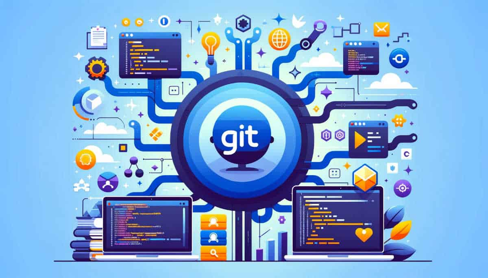

Guía sobre Control de Versiones y GIT
1. ¿Qué es un control de versiones?
El control de versiones, también conocido como "control de código fuente", es la práctica de rastrear y gestionar los cambios en el código de software. Los sistemas de control de versiones son herramientas de software que ayudan a los equipos de software a gestionar los cambios en el código fuente a lo largo del tiempo. A medida que los entornos de desarrollo se aceleran, los sistemas de control de versio.

2. ¿Qué es GIT?
Git es un sistema de control de versiones distribuido, lo que significa que un clon local del proyecto es un repositorio de control de versiones completo. Estos repositorios locales plenamente funcionales permiten trabajar sin conexión o de forma remota con facilidad. Los desarrolladores confirman su trabajo localmente y, a continuación, sincronizan la copia del repositorio con la del servidor.
3. ¿Qué es un repositorio?
Un repositorio es un lugar donde se almacenan los archivos y el historial de cambios de un proyecto. Existen repositorios locales (en tu máquina) y remotos (en servidores, como GitHub).

4. ¿Qué es GITHUB?
GitHub es una plataforma basada en la web que utiliza Git para el control de versiones y proporciona funcionalidades adicionales como colaboración, revisiones de código y gestión de proyectos.

5. ¿Qué es una rama en GIT y para qué sirve?
Una rama en GIT es una línea de desarrollo independiente que permite trabajar en características, correcciones o experimentos sin afectar la rama principal (main o master). Facilita el trabajo paralelo y la integración de cambios.

6. ¿Cuáles son los estados en GIT?
En GIT, los archivos pueden estar en tres estados: modificado, staged y committed.
7. ¿Qué es la terminal, consola o línea de comandos y para qué sirve?
La terminal, consola o línea de comandos es una interfaz de texto que permite a los usuarios interactuar con el sistema operativo y ejecutar comandos para gestionar archivos y ejecutar programas.

8. Funcionamiento de comandos de la terminal
ls- Lista los archivos y directorios en el directorio actual.cd <directorio>- Cambia el directorio actual al especificado.cd ..- Sube un nivel en la jerarquía de directorios.pwd- Muestra la ruta del directorio actual.mkdir <nombre>- Crea un nuevo directorio con el nombre especificado.touch <nombre>- Crea un nuevo archivo vacío o actualiza la fecha de modificación de un archivo existente.rm <nombre>- Elimina el archivo especificado.cp <nombre> <directorio>- Copia un archivo al directorio especificado.mv <nombre> <directorio>- Mueve un archivo al directorio especificado o cambia el nombre del archivo.
9. Listado de Comandos GIT
| Comando | Funcionamiento |
|---|---|
git init |
Inicializa un nuevo repositorio GIT. |
git clone <url> |
Clona un repositorio remoto en tu máquina local. |
git add <archivo> |
Agrega archivos al área de staging. |
git commit -m "mensaje" |
Realiza un commit con un mensaje descriptivo. |
git push |
Envía tus cambios al repositorio remoto. |
git pull |
Descarga y fusiona cambios desde el repositorio remoto. |
git branch |
Muestra, crea o elimina ramas. |
git merge <rama> |
Fusiona cambios de una rama a la actual. |
git status |
Muestra el estado de los archivos en el repositorio. |
git log |
Muestra el historial de commits. |